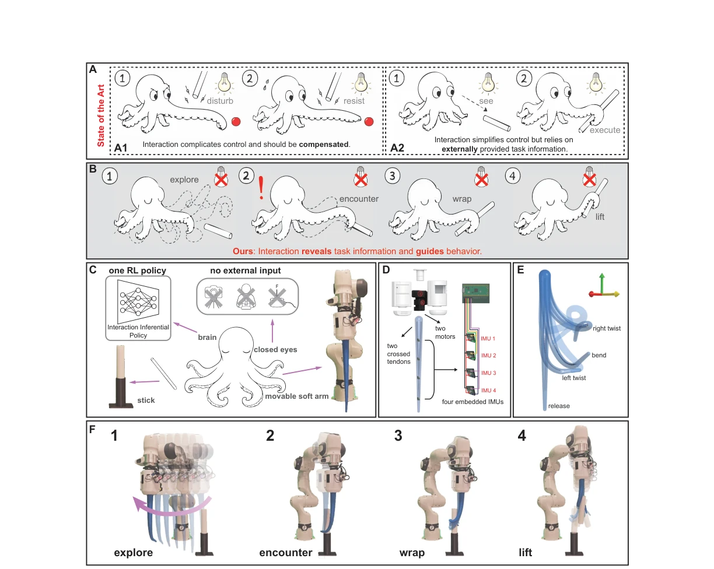
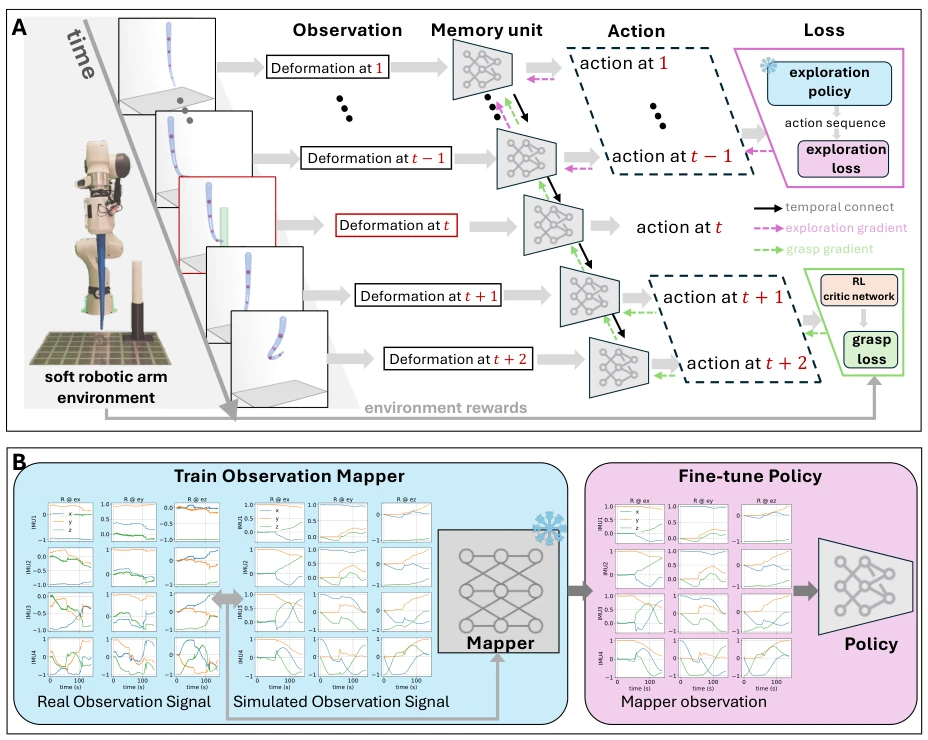
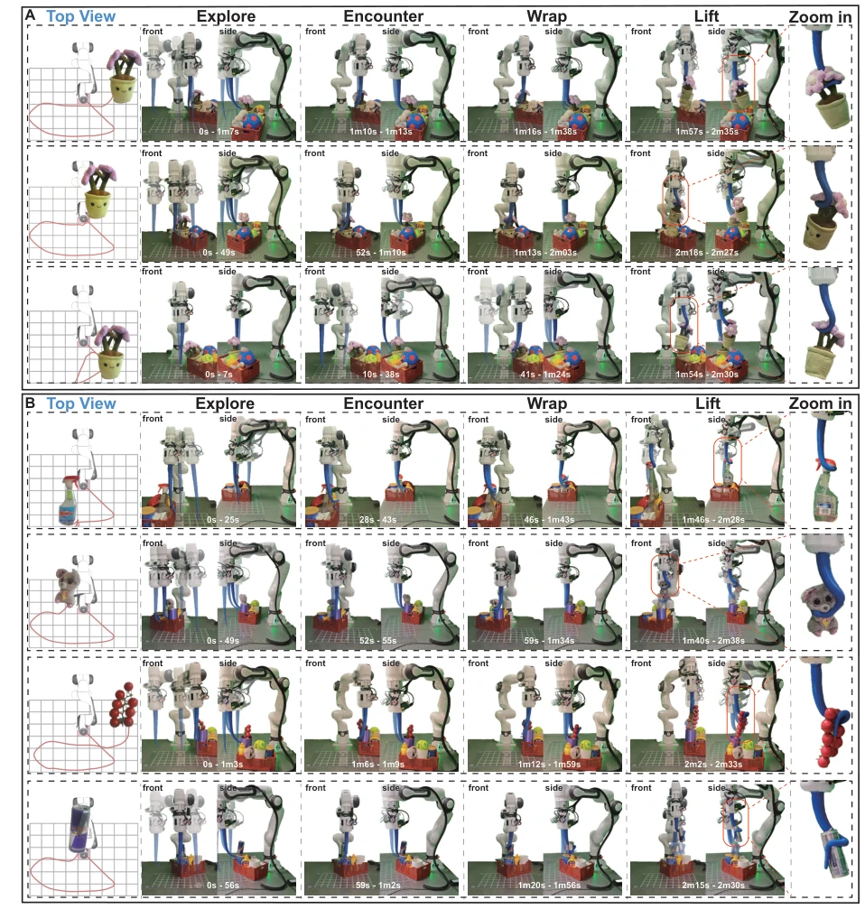
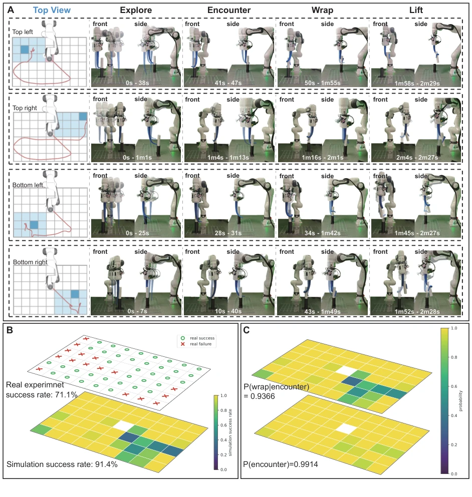
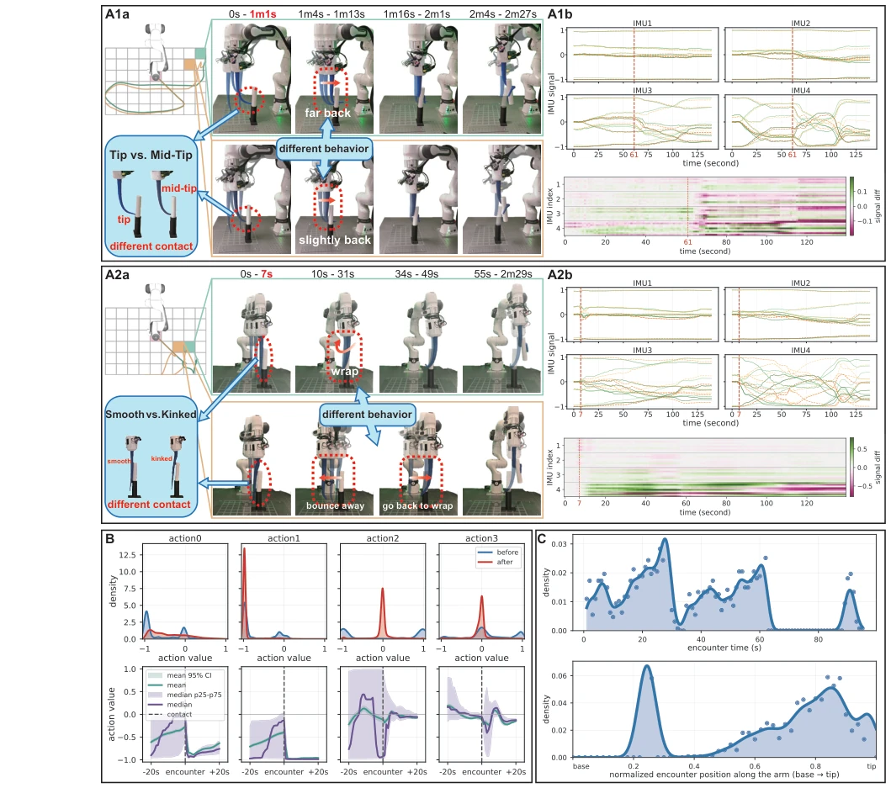

This paper presents a "blind box" challenge for soft robots, navigating without eyes, relying entirely on the body to "feel" its way. The authors transform physical interaction from "noise" into an "intelligence source", and this line of thinking is indeed quite unconventional. However, a 71.1% real-world success rate may not be stable enough for industry, after all the remaining 29% are all "unable to touch" or "unable to grasp firmly". Most interestingly, it proves that the deformation of the soft structure itself can encode environmental information, but this highly depends on the hardware's compliance, switching to rigid robots would likely require reinventing the wheel. Overall, this is a very elegant proof of embodied intelligence under specific tasks, but generalization remains to be seen, after all this "blind feeling" approach might not work for other instances, and sim-to-real transfer still relies on a dedicated Observation Mapper, increasing system complexity.
研究动机Motivation
现有软体机器人控制主要分两类：一是把交互当扰动补偿 (15–20)，二是依赖外部信息辅助执行 (37–40)。例如 Alessi et al. (37) 虽利用接触，但需预设目标位置；Johnson et al. (39) 需物体状态。这些方法假设决策所需信息在交互前已存在，忽略了交互本身的信息生成能力。本文旨在解决盲视条件下的部分可观测问题：关键任务信息无法直接测量，必须从物理交互历史中推断。这要求控制策略不仅执行动作，还要通过交互主动组织信息获取，填补了现有方法在“无外部信息下通过交互生成决策依据”这一空白。灵感来源于象鼻和章鱼触手，强调身体、感知与环境的耦合。
Existing soft robot control is mainly divided into two categories: one treats interaction as disturbance compensation (15–20), the other relies on external information to assist execution (37–40). For example, Alessi et al. (37) utilize contact but require preset target positions; Johnson et al. (39) require object states. These methods assume the information required for decision-making exists prior to interaction, ignoring the information generation capability of interaction itself. This paper aims to solve the partially observable problem under blind conditions: key task information cannot be directly measured and must be inferred from physical interaction history. This requires control strategies not only to execute actions but also to actively organize information acquisition through interaction, filling the gap in existing methods regarding "generating decision basis through interaction without external information". Inspired by elephant trunks and octopus tentacles, emphasizing the coupling of body, perception, and environment.

Figure 1: Overview of proposed Interaction Inferential Learning (IIL) framework for blind
The core is the Interaction Inferential Learning (IIL) framework. Using a single loop policy (IIP), input is a 36-dim rotation matrix from 4 IMUs, with no external task information. Training adopts two-stage joint optimization: (i) Pre-trained exploration policy provides reference, guiding workspace exploration; (ii) SAC RL optimizes grasping after contact. Different stage losses are allocated via mask, sharing the same RNN parameters. RNN structure is used to integrate interaction history, solving partial observability. Sim-to-real uses Observation Mapper to align simulation and real IMU signals, train Mapper first then fine-tune policy. IIP accumulates information via GRU hidden state, converting physical interaction into internal representation, achieving seamless switch from exploration to grasp. Loss function includes reference-guided exploration loss and SAC grasp loss, dynamically allocating weights through physical interaction stages.

Figure 7: Overview of the proposed IIL training framework. (A) IIL framework. A single
Blind grasping performed on cylinders and real objects (bottles, toys, etc.). Metrics include success rate, contact probability, wrapping probability. Comparison baselines include MLP and pure RNN RL. Ablation experiments show RNN is necessary, and IIL's joint optimization is better than training exploration or grasping separately. Real success rate 71.1%, simulation 91.4%. Failures mostly occur in the wrapping stage after contact. Analysis finds interaction can organize different wrapping modes (wrapping modes), such as smooth wrapping or curved wrapping, proving the decisive role of interaction history on behavior organization. Clustering analysis identifies 5 modes, among which 4 are success, 1 is failure, demonstrating interaction-driven behavior convergence.

Figure 2: Representative blind grasping trials performed by the proposed system. (A) Suc-

Figure 3: Blind grasping performance across the reachable workspace. (A) Representative

Figure 4: Interaction-dependent organization of grasping behavior. (A) Representative trials